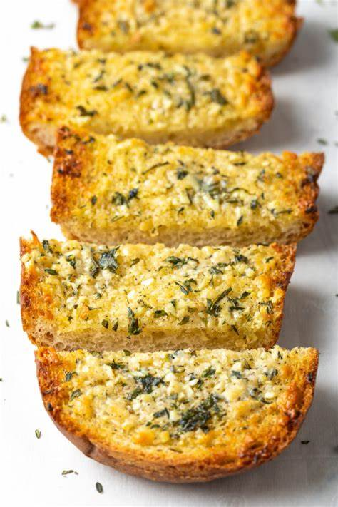

Garlic Bread From Scratch

Perfect garlic bread from scratch
Ingredients
Bread
- 2 1/2 Cups of Flour
- 1 tsp. Salt
- 1 Cup Warm Water
- 1/2 Tbsp. Instant Yeast
- 1/2 Tbsp. Sugary
- 1 Tbsp. Oil
Garlic Butter
- 1/4 - 1/3 Cup Butter (Room Temp)
- 1/2 tsp. Dill
- 6 Garlic Cloves, Minced (I Run it Through My Garlic Grinder)
- 1/2 tsp. Salt
- 1/2tsp. Fresh Black Pepper
Steps
- Mix the yeast and sugar in a measuring cup that keeps it from getting lumpy, add the cup of warm water and stir together. Let sit for 5 minutes.
- Mix 2 cups flour and salt in a medium sized bowl, then dump in the yeast mix and stir until a soft dough forms.
- Kneed until dough is smooth and elastic, adding more flour if needed. don't add so much flour that it becomes dry; it should still be slightly sticky.
- Rinse out the bowl and swirl the oil around ; put the dough back in and turn it over so it's coated.
- Cover the bowl (i like to wrap a tea towel over and under it), and place in a warm (not hot!) oven to rise. I usually turn my oven on to the lowest setting that will turn on the element for 5 min, and then turn it off.
- Turn the oven up to 375f for 20 minutes. My oven runs a little cool so I turn it up to closer to 380 or 390. A little too warm is better than a little too cool, in this case. After 20 min, it should be nicely golden on top. Let it cool until no more than warm.
- In the meantime, mix all ingredients of the garlic butter.
- Slice vertically into 3/4-1 inch slices, leaving the bottom crust intact. Carefully pull slices apart so you can spread the butter on each side of each slice without breaking them apart.
- Wrap loosely but completely in foil and bake at 400f for 10-15 minutes.
- Serve immediately.